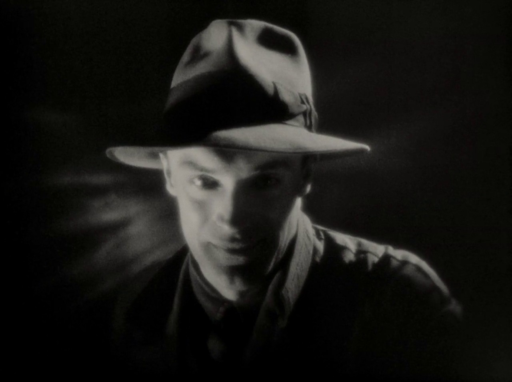

Pandora's Box, frame at 1:56:46
G. W. Pabst · 1929 · Silent film, black and white (frame)
Free to use
The film was made at the Nero-Film studio in Berlin between 17 October and 23 November 1928 and opened at the Gloria-Palast on 9 February 1929. The French cut, also shown in Britain, had no Jack the Ripper and ended with Lulu joining the Salvation Army; shortened American prints ended the same way. The film was banned in Germany from 1933 to 1945.